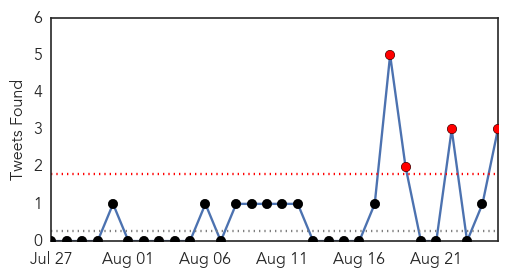
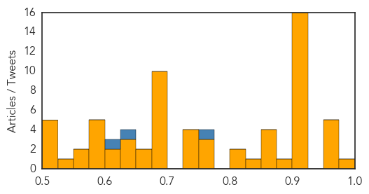
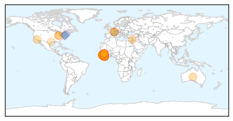
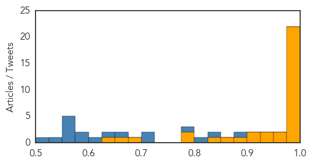

Unknown
30-Day Web Trend
0 alerts, 6 warnings

30-Day Twitter Trend
10 alerts, 4 warnings

Article Locations

Article Confidences
Top Articles:
- 1.000
- Why worries about a MERS virus outbreak at the Hajj are probably overblown
- 0.971
- Saudi Arabia prays MERS won’t disrupt haj
- 0.963
- barfblog
- 0.962
- South Korea confirms death of third Mers patient as health authorities close …
- 0.958
- Universal flu vaccine is no longer science fiction. Scientists report major step in development.
- 0.950
- Why all the news about Legionnaires' disease?
- 0.924
- We've almost eradicated guinea worm
- 0.917
- Chicago Tribune
- 0.917
- Chicago Tribune
- 0.917
- Chicago Tribune
- 0.917
- Chicago Tribune
- 0.917
- Chicago Tribune
- 0.917
- Chicago Tribune
- 0.917
- Chicago Tribune
- 0.917
- Chicago Tribune
- 0.917
- Chicago Tribune
- 0.917
- Chicago Tribune
- 0.917
- Chicago Tribune
- 0.917
- Chicago Tribune
- 0.917
- Chicago Tribune
- 0.917
- Chicago Tribune
- 0.907
- 250 wanted for tuberculosis testing after Alabama student tests positive
- 0.884
- barfblog
- 0.867
- Tularemia Deadly, Unusually Active In Wyoming This Year
- 0.866
- Brazil money launderer testifies former presidential candidate took bribe
- 0.863
- WHO Steps Up Health Response in Yemen as Humanitarian Situation Worsens
- 0.854
- Riyadh leads in MERS infectionsHealthcare
- 0.843
- Calicivirus killing pet rabbits in Adelaide’s south
- 0.824
- Physician traces typhus cases in Galveston area
- 0.820
- Mono Cases Pop Up at Benton Elementary
- 0.771
- DEPARTMENT OF INFORMATION FIJI NEWS SUMMARY 25/08/15 4:30PM
- 0.766
- WCU says buildings safe from legionella bacteria
- 0.759
- E. coli bacteria make 24 people ill in Canada
- 0.739
- TRS Govt Directs Officials to Adopt WHO Guidelines
- 0.733
- BLM confirms Mesa Colorado woman infected with Tularemia
- 0.729
- The Caledonian-Record
- 0.727
- One Dies of Diarrhoea, Condition of 10 Critical
- 0.690
- Denver Fluoride Fight Pits Activists Against Long-Standing Health Policy
- 0.679
- Gibraltar accuses Spanish officers of firing at fishermen
- 0.679
- Help arrives as Washington battles record breaking wildfires
- 0.679
- IS group releases photos of Palmyra temple ‘destruction’
- 0.679
- Spain, Morocco arrest 14 suspected of recruiting for Islamic State group
- 0.679
- Shooting at travellers' camp in France leaves four dead
- 0.679
- IS group claims gay killings as UN meets on anti-LGBT violence
- 0.679
- Iranian biopic on Prophet Muhammad sparks anger
- 0.679
- French prosecutor says train gunman had ‘terrorist intent’
- 0.679
- Jihad suspects in France deny 'terrorism' label
- 0.662
- Africa Reports Huge Losses From Pests
- 0.651
- UCH takes HPV vaccination to rural areas
- 0.643
- Recreational users of the Russian River are encouraged to take precautions
Showing top 50 articles...
Top Tweets:
- 0.884
- RT: ICEID NEWS SCAN: MERS vs SARS, respiratory syncytial virus in the NICU, extended flu vaccine protection http://t.co/8eZySNzQdo
- 0.766
- RT: The Saudi MERS toll as of 24Aug: 1154 cases w/ 492 deaths 592 recovs 70 in care In last 24 hrs 7 new cases 5 deaths h…
- 0.617
- RT: Boy, the MERS outbreak in Riyadh is getting big. +8 cases, +6 deaths. So many older patients; deaths could climb. http…
- 0.550
- Boy, the MERS outbreak in Riyadh is getting big. +8 cases, +6 deaths. So many older patients; deaths could climb. http://t.co/Au9CdlvjSm
- 0.548
- When a hospital ER has undetected MERS spread, look what happens. @WHO describes cases infected in a Riyadh hospital http://t.co/q9HH3UZaCZ
- 0.539
- RT: Una dieta rica en realidades y baja en expectativas para eliminar sobrepeso de obligaciones.
- 0.503
- RT: Todas podemos abrir el frasco de mermelada solas, es todo una puesta en escena para ustedes
Ebola
30-Day Web Trend
1 alerts, 0 warnings

30-Day Twitter Trend
0 alerts, 0 warnings

Article Locations
Article Confidences
Top Articles:
- 1.000
- Ebola epidemic under control
- 1.000
- Sierra Leone Releases Last Ebola Patient, Begins Countdown To Achieve 'Virus-Free' Status : LIFE : Tech Times
- 1.000
- Sierra Leone's last known Ebola patient leaves hospital in joyful ceremony
- 0.999
- Sierra Leone Releases Its Last Ebola Patient From Hospital
- 0.999
- WHO chief calls for urgent transformation of global epidemic response
- 0.999
- Sierra Leone discharges last Ebola patient
- 0.999
- Sierra Leone's last known Ebola patient leaves hospital
- 0.999
- Sierra Leone-Returned US Health Care Worker Under Ebola Observation
- 0.999
- Columbus takes health precautions, treats woman as a potential Ebola case after she reports symptoms
- 0.999
- Sierra Leone's last known Ebola patient leaves hospital
- 0.999
- After Panic, Man Tests Negative
- 0.998
- Ebola: 75% under five children died in Siera Leone-Report
- 0.998
- Woman being treated at Grant hospital as possible Ebola case
- 0.996
- Sierra Leone's last known Ebola patient is discharged singing and dancing
- 0.995
- Sierra Leone's last known Ebola patient is discharged singing and dancing
- 0.994
- Hospital staff in Sierra Leone celebrate the country's last Ebola patient being given all-clear
- 0.994
- Last Known Ebola Patient Released From Sierra Leone Hospital
- 0.991
- 101st Airborne recognized for Ebola fight
- 0.991
- Ebola survivors experience lingering ailments
- 0.989
- LIBERIA: 14 More Released From JFK Ebola Unit Three
- 0.987
- Sierra Leone's Last Ebola Patient Released, But Nation Not Yet 'Ebola-Free'
- 0.979
- The Rocky Mount Telegram
- 0.975
- Sierra Leone releases last known Ebola patient
- 0.970
- Guinea Extends Ebola Ring Vaccine Trial to Sierra Leone - Sierra Leone
- 0.936
- Ebola Response: WHO To Create Health Compliance Plan For Member Countries
- 0.927
- WHO Ebola IHR review committee outlines next steps
- 0.921
- Sierra Leone discharges last Ebola patient
- 0.911
- Sierra Leone discharges last known Ebola patient
- 0.891
- Woman monitored for contagious disease is not being tested for Ebola
- 0.854
- UNFPA Leads Sub Regional Efforts to Restore Maternal Health Services to Post Ebola Liberia - Liberia
- 0.840
- Church in Sierra Leone reacts to Ebola milestone Vatican Radio
- 0.785
- After 456 days of ebola in Salone…42 days countdown starts today « Awoko Newspaper
- 0.776
- A4 Briefs 082515
- 0.681
- News in Brief 24 August 2015 (PM)
- 0.652
- Work Underway to Better Respond to Global Epidemics
- 0.626
- Chatham House Prize 2015: In Conversation with Dr Joanne Liu of Médecins Sans Frontières
Top Tweets:
- 0.976
- Pitt, Drexel, and NIH team up to study persistence of Ebola virus in wastewater - Medical Xpress http://t.co/b23sR2fRfm ebola EVD
- 0.966
- Sierra Leone releases its last known Ebola patient - Junior College http://t.co/uIhYKzmoOG ebola EVD
- 0.958
- Grant Medical Center Monitoring Patient For Possible Ebola Symptoms - 10TV http://t.co/U4uFkGgc2g ebola EVD
- 0.954
- Sierra Leone's last known Ebola patient is discharged singing and dancing - Los Angeles Times http://t.co/ItvgHjMUcA ebola EVD
- 0.911
- 101st Airborne receiving award for work fighting Ebola virus - WLKY Louisville http://t.co/XHp3dVTxu0 ebola EVD
- 0.879
- Ebola vaccine for wild apes tested in New Iberia - The Daily Advertiser http://t.co/b2iuhg61Ps ebola EVD
- 0.878
- Adama Sankoh, Sierra Leone's last Ebola patient, lost her daughter to the virus. Today the 42-day countdown begins. http://t.co/skibYmoFTI
- 0.858
- 101st Airborne recognized for Ebola fight - The Courier-Journal http://t.co/52FrH9XTVo ebola EVD
- 0.858
- 101st Airborne recognized for Ebola fight - The Courier-Journal http://t.co/2pNQyfbe2w ebola EVD
- 0.845
- Ebola training helps improve health care worker safety - Business Insurance http://t.co/U5x77TviCz ebola EVD
- 0.825
- 101st Airborne receiving award for work fighting Ebola virus - WATE 6 On Your Side http://t.co/xOfWlcRxVh ebola EVD
- 0.822
- Expanding and accelerating response to calls for ambulances and burial teams for Sierra Leone’s Ebola Outbreak: http://t.co/TecIMaYnIL
- 0.820
- Woman being evaluated as possible Ebola case - Columbus Dispatch http://t.co/XDX3ycDMnt ebola EVD
- 0.797
- Pitt, Drexel, and NIH team up to study persistence of Ebola virus in wastewater - Medical Xpress http://t.co/YohCWvj2Jf
- 0.786
- RT: GOOD NEWS: Sierra Leone hospital discharges last known Ebola patient http://t.co/f8qg5iqGY9 http://t.…
- 0.738
- LIVE webcast from the Review Committee on the Role of Intl Health Regulations in the Ebola Outbreak & Response http://t.co/r2pHtMZL77
- 0.719
- Sierra Leone releases its last known Ebola patient - Junior College http://t.co/uiWPs3TXJ2
- 0.701
- Cautiously optimistic as last Ebola patient in Sierra Leone is out of hospital and 42-day countdown to being free of transmission begins.
- 0.677
- Ebola aftermath is ‘best chance’ to transform future epidemic response WHO http://t.co/rCVRjV9HzQ
- 0.675
- Sierra Leone's last known Ebola patient is discharged singing and dancing - Los Angeles Times http://t.co/lKrUTIwrUp
- 0.657
- RT: Q1: Let’s start w/ comms during recent Ebola outbreak. What worked and what didn’t? TalkHealthComms
- 0.598
- RT: READ: Joy as Sierra Leone's last Ebola patient ends treatment http://t.co/2AZBX3ZOMt http://t.co/Fh2PrRQPUQ
- 0.562
- Committee reviewing International Health Regulations in wake of Ebola crisis hopes to present change recommendations next May. IHR
- 0.554
- RT: What will it take 2 help Sierra Leone rebuild its healthcare systm after the Ebola crisis? @THOMASABDUL investigates http://t…
- 0.512
- Liberia SituationReport on Ebola - 19 August 2015 https://t.co/k2av4LKufa via
- 0.511
- RT: Sierra Leone discharges last Ebola patient, after 15 months & nearly 4,000 deaths. http://t.co/SoP5ttqQqk http://t.co/n1cWW3…